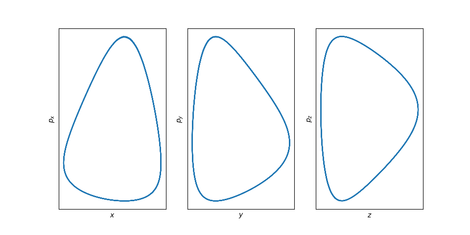
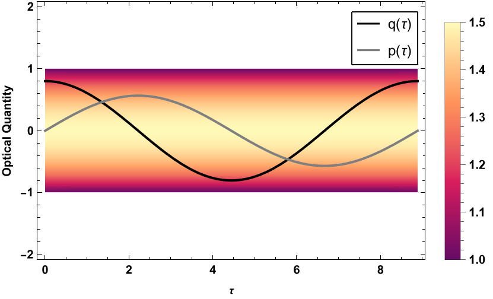
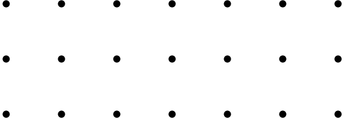

Some information about symplectic integration methods and their use cases.
6/15/26

An introduction to the framework of Hamiltonian optics, Poisson brackets, and Lie transformations.
5/20/26

A technique for numerically solving partial differential equations.
7/30/25